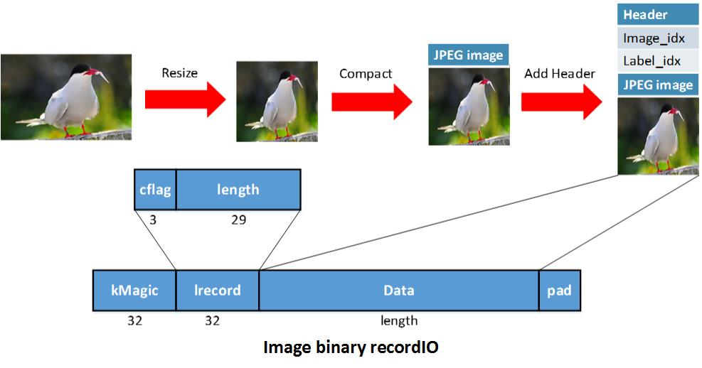
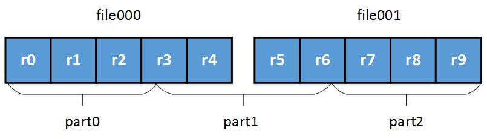
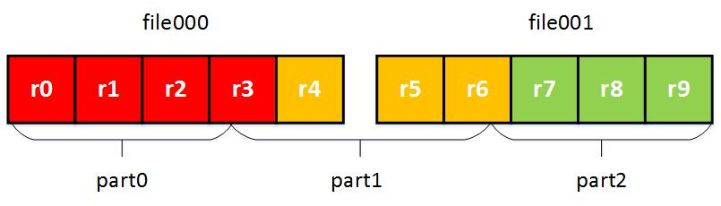
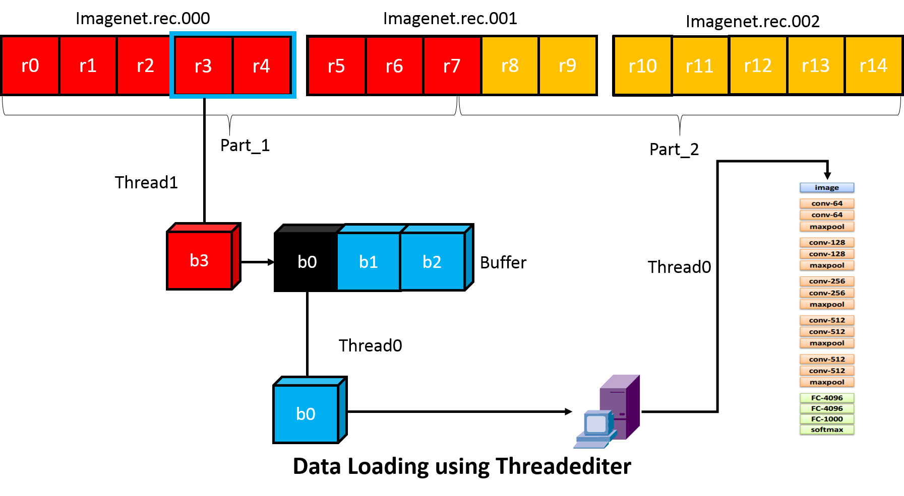

为深度学习设计高效的数据加载器（翻译）
翻译自：https://mxnet.incubator.apache.org/architecture/note_data_loading.html
在任何机器学习系统中，数据加载都是很重要的一部分。当我们处理很小的数据集时，我们可以把整个数据集加载到 GPU 的内存中。对于大的数据集，我们必须把训练样本放在主内存。当数据集大到主内存都放不下时，数据加载就变成影响性能的很重要的一点。设计数据加载器时，我们的目标是高效的数据加载和数据准备，并且提供一个干净灵活的接口。
这篇文章的结构如下：
- 对 IO 设计的理解： 数据加载的原则指南。
- 数据格式： 我们的解决方案是用 dmlc-core 库的二进制 recordIO 实现。
- 数据加载： 为减小 IO 开销，我们使用 dmlc-core 提供的基于线程的迭代器。
- 接口设计： 设计接口使用户可以用几行 Python 代码来写一个 MXNet 数据迭代器。
- 扩展性： 一些前瞻性的想法，使数据加载更加灵活。
我们的分析会提供一些对高效的 IO 系统的需求。
关键需求列表
- 小的文件尺寸
- 并行（分布式）的文件打包
- 快速的文件加载和在线数据增强
- 在分布式环境中从数据集的任意位置快速读取
对 IO 设计的理解
要设计一个 IO 系统，我们必须解决两个问题：数据准备和数据加载。数据准备通常是在线下做的，而数据加载是在线上做的，会影响线上的性能。在这一节中，我们将介绍关于这两个问题上对 IO 设计的理解。
数据准备
数据准备是指为后续处理将数据导报成所需要的格式的过程。当处理像 ImageNet 这样的大数据集时，这个过程可能很费时间。在这些情况下，有几种启发式的方法：
- 将数据集打包成几个文件。一个数据集可能包含上百万的训练样本，打包过的数据可以方便地在机器之间传输。
- 仅打包一次。我们不想对每个运行时环境重新进行打包，比如在机器的数量变化时。
- 并行地进行打包。
- 要可以方便地访问任意位置的数据。这对风不是机器学习的数据并行非常关键。当数据被打包成几个文件时，这会变得复杂。需要的行为可能是：打包后的数据可以被逻辑上分成任意数量的分区，不论打包成多少个物理上的文件。例如，如果我们把 1000 个图片打包成 4 个文件，每个文件包含 250 个图片。如果我们使用 10 台机器去训练 DNN，我们应该能够为每台机器加载大约 100 个图片。某些机器可能需要从不同的物理文件中加载图片。
数据加载
下一步需要考虑的是如何将数据加载到 RAM。我们的目标是尽可能快地加载数据。我们可以尝试遵守以下几个启发式的原则：
- 使读操作连续： 在磁盘上连续位置的读取速度更快。
- 减少需要加载的字节数： 我们可以压缩存储数据，例如，用 JPEG 格式保存图片。
- 在不同的线程中加载和训练： 这可以避免在加载数据时造成计算的瓶颈。
- 节省 RAM： 小心地决定是否将整个文件读入内存。
数据格式
因为深度神经网络的训练通常会用到大量数据，所以数据格式应该高效并且方便使用。要达到这个目标，我们需要用可以分割 (splittable) 的格式打包数据。在 MXNet 中，我们依赖于 dmlc-core 中实现的二进制 recordIO 格式。
二进制数据记录 (Binary Record)

在 MXNet 的二进制 RecordIO 中，我们把每个数据实例存储为一个记录。kMagic 是个魔法数代表记录的起始位置。Lrecord 编码记录长度和一个标志。在 Irecord 中，
- cflag == 0: 这是个完整的记录
- cflag == 1: 多记录 (multi-record) 的开始
- cflag == 2: 多记录的中间
- cflag == 3: 多记录的结束
Data 是用来存储数据内容的空间。Pad 为了让记录按 4 字节对齐做的填充。
数据打包之后，每个文件会包含多条记录，加载就可以是连续的。这避免了磁盘随机位置读取带来的效率下降。
用记录来存储数据的另一个优点是记录可以是变长的。这允许我们在数据可压缩的情况下高效地保存数据。例如，我们可以使用 JPEG 格式来保存图片数据，打包后的数据会比未压缩的 RGB 格式小很多。
拿 ImageNet_1K 数据集举例。如果我们用 3 256 256 的数组保存 RGB 值，数据集大小就会超过 200G。但是压缩成 JPEG 之后，大小仅为 35G。这极大地减小了从磁盘上读数据的开销。
这里有个二进制 recordIO 的例子：

我们首先将图片大小调整为 256 * 256，然后用 JPEG 格式压缩。之后我们创建 Data 字段，并且保存一个记录头来表示图像的索引和标签。我们保存多个图片到同一个文件中。
随机访问数据
一个可取的数据加载的特性是：打包的数据可以被逻辑地划分成任意多个分区，不管有多少物理文件。因为二进制 recordIO 可以很容易地用魔法数（Magic Number）定位到记录的起止位置，我们可以使用 dmlc-core 的 InputSplit 功能达到这个目标。
InputSplit 有以下几个参数：
- FileSystem filesys: dmlc-core 对不同文件系统（如 hdfs, s3, 或本地文件系统）的 IO 操作的包装器。用户不需要关心文件系统之间的差异。
- Char uri: 文件的 URI。注意这个可能是个文件的列表，因为我们可能会把一份数据打包到多个物理文件中。多个文件 URI 用 ‘;’ (分号) 分隔。
- Unsgined nsplit: 逻辑分片的个数。nsplit 可以和物理文件的个数不同。
- Unsigned rank: 在这个进程中加载哪个分片。
分片过程如下所示：
- 确定每个分区的大小。

- 根据文件大小大致地将记录集分区。注意分区的边界可能在某条记录中间。
 - 调整分区的起始位置，避免将一条记录放到不同分区。

做了以上操作之后，我们可以算出哪个记录属于哪个分区，和哪个分区属于哪个物理文件。InputSplit 极大地简化了数据并行化，在并行化中每个进程只需要读取部分数据。
因为我们的分区方法不依赖与物理文件的数目，所以我们可以并行地处理很大的数据集（比如 ImageNet_22K），如下图所示。在准备阶段我们不需要考虑分布式加载的问题，我们只需要根据数据集的大小和可用的计算资源来选择物理文件的额个数。

数据加载和预处理
当加载和预处理的速度不能赶上计算或预测的速度，IO 就会成为整个系统速度的瓶颈。在这一节中，我们会介绍一些在用二进制 recordIO 格式加载和预处理数据时提高效率的技巧。在 ImageNet 数据集上测试时，我们的方法使得在一个普通的 HDD 硬盘上的 IO 速度达到 3000 张图片每秒。
运行时加载和预处理数据
在训练深度神经网络时，我们有事必须在训练的同时加载和预处理数据，原因有以下两点：
- 当数据集的大小大于可用的内存大小时，我们无法提前加载数据。
- 有时，为了让模型能对平移、旋转和微小的颜色变化有鲁棒性，我们在训练过程中引入随机性。这些情况下，我们必须在每次访问训练数据之前重新预处理它们。
为了提高效率，我们还提出了多线程加载技术。以 ImageNet 的训练为例，在加载了一批图片记录之后，我们可以开启多线程来同时进行图片的解码和图片增强。下图展示了这个过程：

用 Threadediter 隐藏 IO 开销
降低 IO 开销的一个方法是当主线程执行前向和反向计算时，用另一个线程来预先读取下一批 (batch) 的数据。为了支持更复杂的训练场景，MXNet 提供了一个使用 dmlc-core 的 threadediter 的通用的 IO 处理流水线。threadediter 的关键点是用一个单独的线程来作为数据提供者，而主线程作为数据消费者，如下图所示。
threadediter 维护一个固定大小的缓冲区，并且当缓冲区不满的时候自动填充它。当消费者消费了缓冲区中的部分数据之后，threadediter 就会重用这部分空间来存下一部分的数据。

MXNet IO Python 接口
我们使 IO 对象成为 numpy 中的迭代器，然后用户就可以方便地用 for 循环和 next() 函数来方便地访问数据。在 MXNet 中定义一个迭代器和定义一个符号式操作非常类似。
以下代码展示了如何定义一个 cifar 数据迭代器：
dataiter = mx.io.ImageRecordIter(
# Dataset Parameter, indicating the data file, please check the data is already there
path_imgrec="data/cifar/train.rec",
# Dataset Parameter, indicating the image size after preprocessing
data_shape=(3,28,28),
# Batch Parameter, tells how many images in a batch
batch_size=100,
# Augmentation Parameter, when offers mean_img, each image will subtract the mean value at each pixel
mean_img="data/cifar/cifar10_mean.bin",
# Augmentation Parameter, randomly crop a patch of the data_shape from the original image
rand_crop=True,
# Augmentation Parameter, randomly mirror the image horizontally
rand_mirror=True,
# Augmentation Parameter, randomly shuffle the data
shuffle=False,
# Backend Parameter, preprocessing thread number
preprocess_threads=4,
# Backend Parameter, prefetch buffer size
prefetch_buffer=1)
大体上说，要创建一个迭代器，你需要定义五种参数：
- 数据集参数： 访问数据所需的信息，例如文件路径、输入形状
- 分批参数： 指定如何构造一个分批（batch），例如分批大小（batch size）
- 增强参数： 输入图像上应该应用何种增强操作，（例如，截取、镜像）
- 后端参数： 控制后端线程的行为来隐藏数据加载的开销
- 辅助参数： 提供选项来辅助调试
通常，数据集参数 和 分批参数 是必须指定的，否则你无法创建数据分批 (data batch)。其他参数在需要时可以被指定。理想情况下，我们应当将 MX Data IO 独立到模块中，其中有些可能对用户有用，例如：
- 高效的预读： 允许用户为他们自定义的数据格式写能够自动获得多线程预读支持的数据加载器。
- 数据变形： 图像的自动截取、镜像，等等。允许用户使用这些工具，或者插入他们自己的数据变换器（例如，他们可能想要添加某种相关的随机噪声）
未来的扩展
将来，我们可能考虑为我们的数据 IO 添加一些扩展。特别地，我们可能为包括图像分割、物体定位和语音识别等应用添加专门的支持。当这些应用跑在 MXNet 上以后，我们将提供更多的细节。